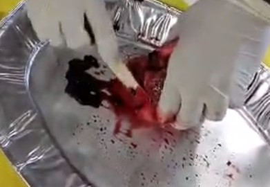
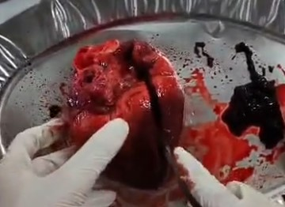
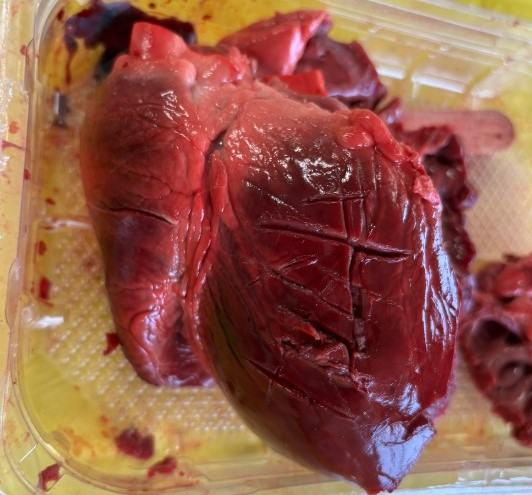

Procedimento della dissezione

Passo 1: Osservazione esterna
Il cuore viene esaminato esternamente per riconoscere auricole, vasi principali (aorta, tronco polmonare) e vene polmonari. Questa fase permette di familiarizzare con la struttura generale.

Passo 2: Rimozione dei coaguli
I coaguli di sangue residui vengono rimossi dalle cavità cardiache. Questo consente di osservare chiaramente le strutture interne e di seguire il percorso del sangue.

Passo 3: Taglio longitudinale
Un'incisione verticale apre il cuore, permettendo di osservare atri, ventricoli e valvole interne. Si evidenzia la differenza di spessore tra ventricolo destro e sinistro.

Passo 4: Taglio trasversale
Il taglio trasversale dell'apice permette di confrontare le cavità ventricolari e osservare trabecole carnee e setto interventricolare.